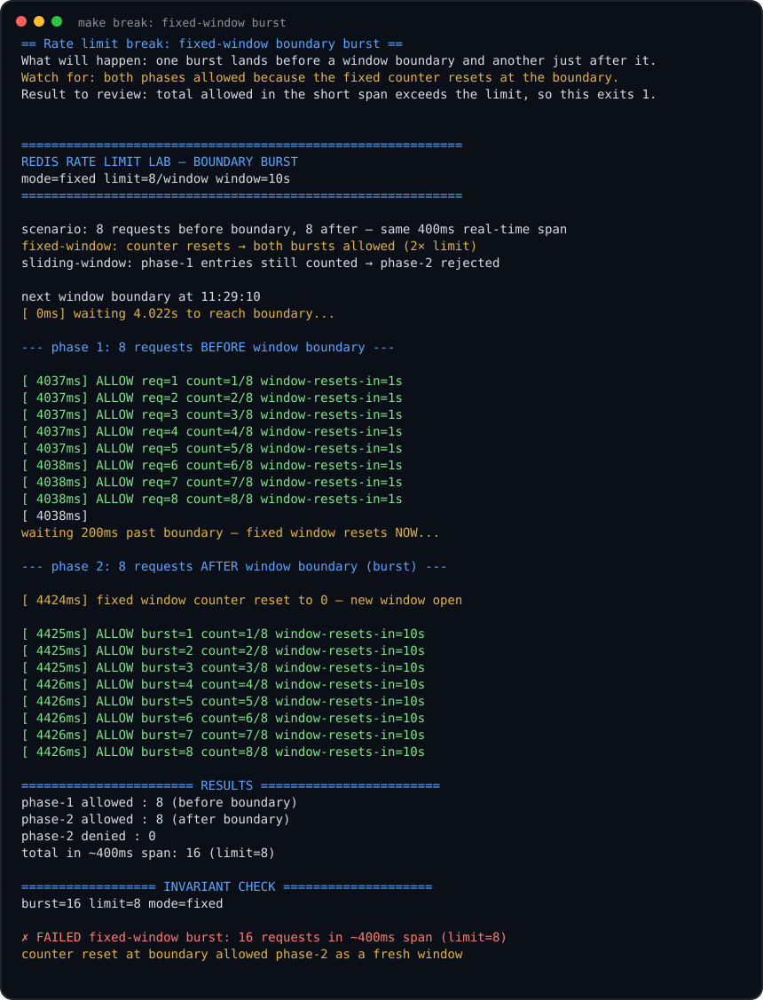
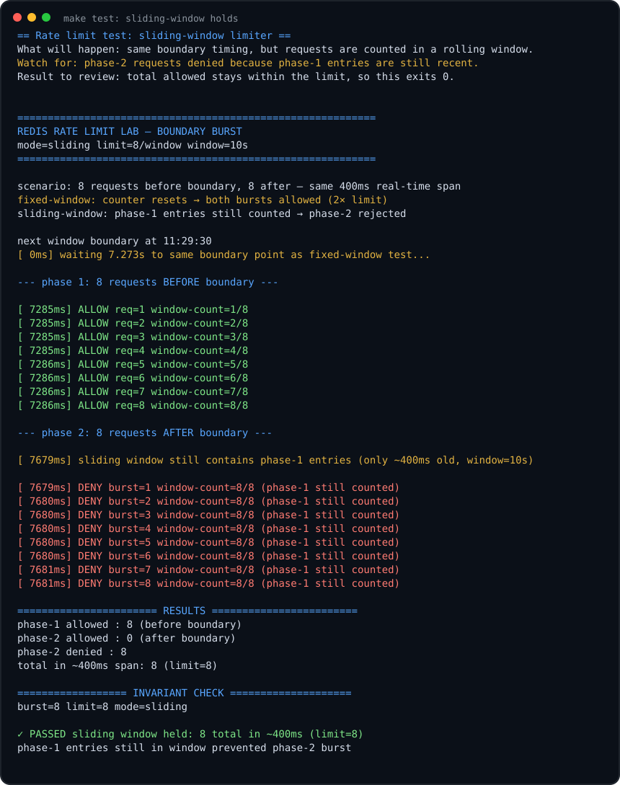

Rate Limit Lab: Fixed Window vs Sliding Window
This lab shows that a fixed window can allow a boundary burst, then uses a sorted-set sliding window to count requests across a rolling interval.
What Actually Fails
The broken run sends one full batch just before a clock boundary and another full batch just after it. With a limit of 8 per 10 seconds, the fixed-window limiter can allow 16 requests in roughly 400ms.

make break run. The fixed-window counter resets at the boundary and allows both batches.The fixed-window script did not lose an update. It counted exactly what it was asked to count. The problem is that two adjacent fixed windows can overlap into a very small real-time burst.
Code Pointers
| Code | Why it matters |
|---|---|
fixedWindowScript | Builds a counter key from the window start time. That creates the reset at the boundary. |
slidingWindowScript | Stores request timestamps in a sorted set and removes only entries older than the rolling window. |
runFixed | Waits until 200ms before a clock boundary, sends the first batch, waits 200ms after the boundary, then sends the burst. |
runSliding | Uses the same timing as runFixed, but the first batch is still inside the rolling window when the second batch arrives. |
Redis Commands In This Lab
EVAL script keys args
The Go driver sends each limiter decision to Redis as one script. That keeps check plus update atomic.
INCR rl:fixed:<start>
Counts requests in one fixed window. The suffix changes when the clock crosses the boundary.
EXPIRE key seconds
Cleans up fixed-window counters. It is not what enforces the limit. The count comparison does that.
ZREMRANGEBYSCORE rl:sliding 0 cutoff
Deletes timestamps that are too old to count. This is what makes the window roll forward continuously.
ZCARD rl:sliding
Counts the remaining timestamps after cleanup. If this count is already at the limit, deny.
ZADD rl:sliding now uid
Records an allowed request. The score is the timestamp. The member is unique so multiple requests in the same millisecond do not overwrite each other.
PEXPIRE rl:sliding ms
Lets Redis delete the sorted set after the user stops sending requests.
Fixed-Window Lua
local count = redis.call('INCR', key)
if count == 1 then
redis.call('EXPIRE', key, windowSec * 2)
end
if count > limit then return {0, count, remaining} end
return {1, count, remaining}winStart = nowSec - (nowSec % windowSec)Rounds time down to a clock-aligned window. This is why the boundary burst exists.
key = KEYS[1] .. ':' .. winStartCreates a separate Redis key for each fixed window. A request after the boundary no longer sees the previous count.
INCRAtomically increments the counter for that one window. This part is correct and safe under concurrency.
EXPIRESets cleanup TTL only when the counter is first created. The lab uses windowSec * 2 so old counters live long enough to inspect briefly.
return {0 or 1, count, remaining}Returns allow/deny, the counter value, and seconds until the next fixed-window reset.
Sliding-Window Lua
redis.call('ZREMRANGEBYSCORE', key, 0, now - windowMs)
local count = redis.call('ZCARD', key)
if count >= limit then return {0, count} end
redis.call('ZADD', key, now, uid)
redis.call('PEXPIRE', key, windowMs)
return {1, count + 1}ZREMRANGEBYSCORERemoves timestamps older than now - windowMs. Unlike fixed window, this cutoff changes every millisecond.
ZCARDCounts requests still inside the last N seconds.
count >= limitDenies before adding this request. That avoids temporarily storing a request that should not count.
ZADDRecords the accepted request with a unique member id. The score gives Redis the time ordering.
PEXPIRECleans up the key after activity stops. The limiter would still work without this, but abandoned keys would accumulate.
How The Fixed Run Should Look
The evidence is in the result block: phase-1 allowed = 8, phase-2 allowed = 8, and total in ~400ms span = 16. That is why make break exits 1.
How The Sliding Run Should Look

make test run. Phase-1 entries remain inside the rolling window, so phase-2 is denied.Run Targets
make break
Fixed window. Look for both phases allowed and total allowed above the configured limit.
make test
Sliding window. Look for phase-2 denies because phase-1 timestamps are still inside the window.
make load
Larger sliding-window run with a higher limit.
Production Notes
- Mental trap: Lua makes the update atomic, but it does not make fixed-window semantics fair.
- Fixed window is simple, but it allows boundary bursts.
- Sliding window prevents boundary bursts, but it is not a strict smooth limiter. A client can still spend the full limit immediately and then wait.
- For smooth spacing, use GCRA or a leaky-bucket style limiter with
next_allowed_ator theoretical arrival time. - Use server-side time or consistent app time when multiple app instances apply the same limiter.